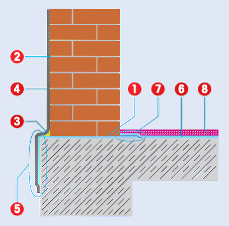
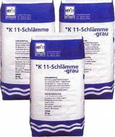
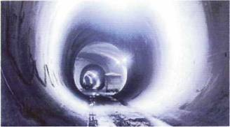
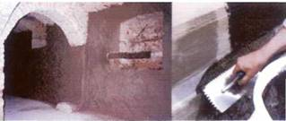
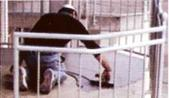

Гидроизоляционные шламы
Гидроизоляционные шламы HEYDI обеспечивают быструю, длительную и надежную защиту от воды, воздействующей как снаружи, так и изнутри строительной конструкции, на которую они нанесены. Они характеризуются простотой нанесения - щёткой, шпателем или механизированным способом.
Жесткие шламы: Серый шлам К11 предназначен для гидроизоляции строительных конструкций, не подверженных опасности появления трещин, для внутренней обработки резервуаров питьевой воды, и для создания гидроизоляционного слоя между цоколем фундамента и стенами. Его расход составляет от 2 до 4 кг/м2. Там, где изоляционный слой будет виден, рекомендуется использовать Белый шлам К11, а в канализационных сооружениях с сильным воздействием сульфатов, как например, в канализационных трубах, шахтах или каналах рекомендуется использовать Шлам К11 Сульфатекс.
Эластичные шламы, перекрывающие микротрещины: 2-х компонентный Эластичный серый шлам К11 обладает исключительно сильным сцеплением с основанием 1,6 Н/мм2 и при этом очень легко наносится. Он может применяться при ремонте для изоляции от проникновения солей, а также, для гидроизоляции от воды, воздействующей как с наружной, так и с внутренней стороны строительной конструкции, со стороны основания. Помимо этого он может использоваться для защиты битумной гидроизоляции от воды, воздействующей на него со стороны основания. Там, где гидроизоляция будет видна, рекомендуется использовать Эластичный белый шлам К11.
Универсальный эластичный шлам, перекрывающий трещины до2 мм: универсальный по области применения, 2-х компонентный шлам Ардалон 2К плюс может использоваться для гидроизоляции соприкасающихся с землёй строительных конструкций (подвалы, подземные гаражи, бетонные части конструкций) как с внешней, так и с внутренней стороны, особенно в местах, подверженных образованию трещин. Используется в качестве гидроизоляционного слоя под керамической плиткой и природным камнем на стенах и полах в сырых помещениях, на балконах, террасах и в плавательных бассейнах.
ПРИНЦИПЫ ДЛИТЕЛЬНОЙ И КАЧЕСТВЕННОЙ ГИДРОИЗОЛЯЦИИ
ГИДРОИЗОЛЯЦИЯ ФУНДАМЕНТА.
1. Горизонтальная гидроизоляция под

стенами при помощи Серого шлама
К11. Закрыть 2/3 вертикальной
поверхности опорных плит, чтобы
достигалось перекрытие с
гидроизоляцией вертикальных
поверхностей стен, производимой
позднее ( п.п. 4, 5)
2. Цементная штукатурка (MG III) или
штукатурка на основе трассового
цемента для ремонта стены и
заполнения швов.
3. Галтель из Уплотнительного
раствора с замещением примерно 10-
20% воды Адгезионнной эмульсией.
4. Гидроизоляция стен с помощью Серого шлама К11 до 2/3 вертикальной поверхности опорной плиты фундамента, с перекрытием гидроизоляции по п. 1.
5. Область нахлёстки.
6. Гидроизоляция пола от восходящей
капиллярной влаги, с помощью
Серого шлама К11.
7. Нахлёстка горизонтальной изоляции
(минимальная ширина 20 см).
8. Защитное покрытие.
Толстослойное покрытие 1К используется для точечного крепления защитных, дренажных и изоляционных плит.

СЕРЫЙ ШЛАМ К11Гидроизоляционный мелкозернистый раствор
КОМПОНЕНТЫ СИСТЕМЫ:
а) Уплотнительный раствор
c) Серый шлам К11
d) Толстослойное покрытие 1К
ОБЛАСТИ ПРИМЕНЕНИЯ:
Подвальные помещения, подземные гаражи, конструкции из бетона, горизонтальная гидроизоляция под стенами, внутреннее покрытие резервуаров питьевой воды и т. д.
• длительная защита соприкасающихся с землей строительных конструкций из бетона, каменной кладки и т.д.
• защищает от влажности грунта и воды под давлением
• хорошее сцепление с основанием
• устойчив к воздействию морской воды и мороза
• выдерживает нагрузки вскоре после нанесения
• может использоваться для резервуаров питьевой воды
имеются государственные свидетельства об испытаниях
Расход: для защиты от влажности грунта - прим. 2 кг/м2
для защиты от воды под давлением - прим. 4 кг/м2
Форма поставки: в мешках по 25 кг
ШЛАМ К11 SULFATEX
Сульфатостойкий гидроизоляционный шлам
Области применения:

гидроизоляция строительных конструкций в водоотводных и канализационных системах, таких как шахты, каналы и канализационные коллекторы и т.п.
• длительная устойчивость к воздействию сульфатов
• против влажности грунта и воды под давлением
• для канализационных труб, колодцев, канав
• устойчив к воздействию морской воды и мороза
Расход:
для защиты от влажности грунта - прим. 3 кг/м2
для защиты от воды под давлением - прим. 6 кг/м2
ДОПОЛНИТЕЛЬНАЯ ВНУТРЕННЯЯ ГИДРОИЗОЛЯЦИЯ ПРИ РЕМОНТЕ
Форма поставки: в мешках по 25 кг
ЭЛАСТИЧНЫЙ СЕРЫЙ ШЛАМ К11
Двухкомпонентный гидроизоляционный шлам
Область применения:
гидроизоляция подвалов, шахт, новых и старых строительных

конструкций. При ремонте используется для защиты от проникновения солей и в качестве основы для санирующей штукатурки. При битумной гидроизоляции применяется для защиты от напорной воды, действующей изнутри основы на отрыв битумного покрытия.
• против воды действующей под давлением снаружи и изнутри строительной конструкции
• наносится на все минеральные основания
• выдерживает нагрузки вскоре после нанесения Гидроизоляция каналов, Защита битумных
• исключительно сильное сцепление с поверхностью 1,6 Н/ м2 шахт, туннелей, повалов покрытий от воды
• имеются государственные свидетельства об испытаниях действующей
изнутри основы
Расход: для защиты от влажности грунта и воды под давлением -от 2,5 до 3,0 кг/м2
Форма поставки: в мешках по 15 кг (комп. А) и в канистрах по 5 кг (комп. В)
ШЛАМ АРДАЛОН 2К ПЛЮС
Высокоэластичный гидроизоляционный шлам
Области применения:
гидроизоляция между керамической плиткой или облицовкой из природного камня и каменным основанием на стенах и на полу в сырых помещениях, на балконах, террасах и в плавательных бассейнах; гидроизоляция строительных конструкций, соприкасающихся с землей (особенно, подверженных образованию трещин) например подвалов, шахт, подземных гаражей.
• долгосрочная гидроизоляция соприкасающихся с землей конструкций из бетона, каменной кладки и цементной штукатурки
• защищает от влажности грунта и воды под давлением

• для внешней и дополнительной внутренней гидроизоляции
• для сырых помещений, балконов, террас, плавательных бассейнов
• хорошее сцепление с поверхностью
• перекрывает трещины до 2 мм
• выдерживает нагрузки вскоре после нанесения
• имеются государственные свидетельства об испытаниях
защита от влажности грунта - прим. 2 кг/м2 Гидроизоляция балконов и террас
под плитку на балконах, террасах, в сырых помещениях - прим. 3,5 кг/м2
под плитку в плавательных бассейнах - прим. 5 кг/м2
Форма поставки: в мешках по 15 кг (комп. А) и в вёдрах по 5 кг (комп. В)
 Загрузить полный вариант - Универсальные гидроизоляционные шламы на минеральной основе
Загрузить полный вариант - Универсальные гидроизоляционные шламы на минеральной основе